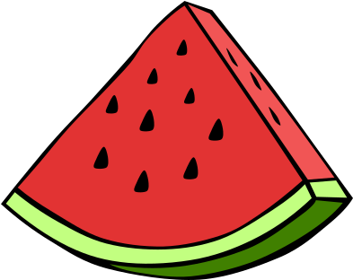

email: alongurman at gmail dot com
I am interested in all things ISM. I use the GHOSDT (Galaxy HydrOdynamical simulations of Supernova Driven Turbulence) simulations to investigate the cold ISM, star-formation self-regulation, and to predict emission lines.
I live a second life as a rock climber. I have toured North America living out of a minivan climbing some big walls and sometimes equally challenging small rock, from Tutokanula (El Capitan) in Yosemite Valley to Mount Hooker in the Wind River Range. I am very interested in the political history of the middle east, have been vegan since 2010, and my favorite fruit is watermelon 
arXiv e-prints, July 2025, arXiv:2507.16700
The Astrophysical Journal, May 2025, Volume 984, Number 2, page 142
The Astrophysical Journal, April 2024, Volume 965, Number 2, page 179
The Astrophysical Journal, January 2024, Volume 960, Number 1, page 8
The Astrophysical Journal, October 2021, Volume 920, Number 2, page 83